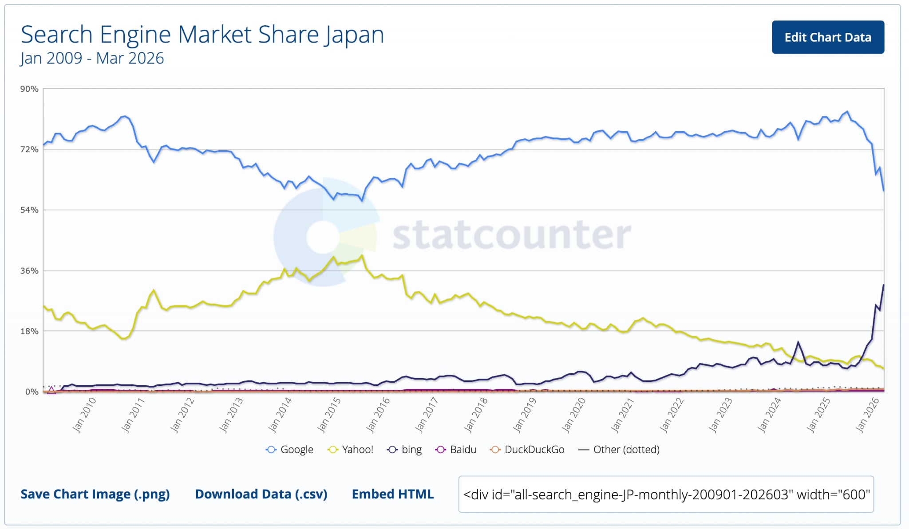

SEO概要
SEOとは、検索エンジンの歴史、SEOの目的、企業の課題、SEOでできること
検索エンジンの歴史とGoogleの位置づけ
SEOを学ぶうえでまず理解しておきたいのが、「相手」である検索エンジンがどのような歴史をたどり、現在どのような位置づけにあるかです。古くから伝わる兵法書「孫子」には「彼を知り己を知れば百戦殆からず」という言葉がありますが、SEOにおいてもまず理解すべき相手は検索エンジンそのものといえます。
検索エンジンの歴史は1994年、米国でYahoo!が開発されたことに始まります。日本では1996年に「Yahoo! JAPAN」が登場し、Webサイトを人力で1つずつ登録・分類するディレクトリ型検索が主流でした。一方、1995年に登場したAltaVistaを先駆けとして、情報収集プログラムが自動的にWebページを巡回し収集するロボット型検索が台頭します。1990年代後半のインターネットの爆発的な成長に人力での分類が対応しきれなくなったことで、1998年に登場したGoogleを中心にロボット型検索エンジンが主流となっていきました。
ディレクトリ型検索
Webサイトを人力で確認し、カテゴリごとにツリー構造で分類・登録する検索方式。初期のYahoo!カテゴリなどで採用されていました。
ロボット型検索
クローラーと呼ばれる自動巡回プログラムがWebページの情報を収集し、キーワードごとにデータベース化する検索方式。人力に頼らず、Web全体の急激な増加に対応できる点が特徴で、現在の検索エンジンの主流です。
日本国内でも、Yahoo! JAPANは2010年10月にGoogleの検索エンジンを採用し、これによりGoogleが日本の検索エンジンシェアで実質的な主導権を握ることになりました。2018年にはYahoo!カテゴリのサービス自体が終了し、ディレクトリ型検索は歴史的な役割を終えています。
StatCounterなどの計測データによれば、日本国内の検索エンジン経由の流入は現在もGoogleが最大シェアを占めています。加えて、Yahoo! JAPANも検索エンジンにGoogleの技術を採用しているため、日本で使われている検索の約65〜70％が実質的にGoogleのアルゴリズムで処理されているといわれています。本コースでも、この前提に基づき主にGoogleを対象にSEOを解説します。

個別の検索エンジンのシェアの数字を覚えることよりも重要なのは、「人力の時代」から「機械が自動でWebを理解する時代」へと検索エンジンが進化してきたという大きな流れを理解しておくことです。この流れは、後の章で学ぶAI検索の時代にもつながっています。